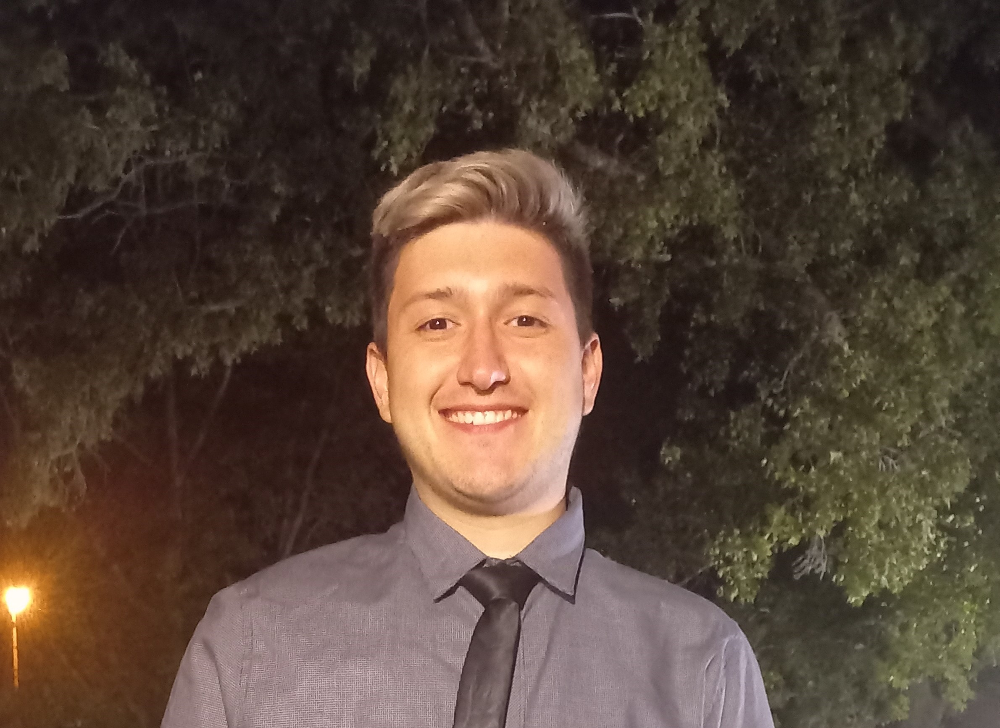

CURRICULUM VITAE

DATOS PERSONALES
- Nombres y apellido: Nestor Ariel Stroppa
- Fecha de nacimoento
- C.U.I.L: 20-39.823.156-3
- Localidad: Rio Cuarto
- Telefono: 358- 1543030186
- Correo electronico: stroppaariel@gmail.com
FORMACION ACADEMICA
- Primario completo: Escuela Gobernador DR. Amadeo Sabattini(2001-2008)
- Estudios universitarios: Primer año de ingenieria mecanica. Universidad Nacional Rio Cuarto (unrc)
FORMACION COMPLEMENTARIA
- Curso de refrigeracion y aire condicionado - Refrigeracion domiciliaria itec (Instituto Tecnologico Rio Cuarto)
(2017)
- curso de instalaciones electricas industriales(itec)(2017)
- curso administrativo bancario (cepi)(2018)
- curso desarrolador back-end con python (inove coding school)(2023)
EXPERIENCIA LABORAL
- Frigorifico Cerutti(2017-2018)
- Distribuidora TASK S.R.L.(2018-2020)
- Centro hidraulico Rio Cuarto
REFERENCIAS